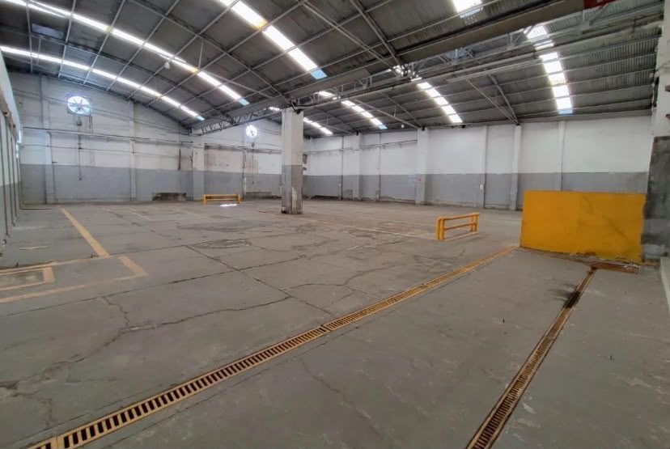
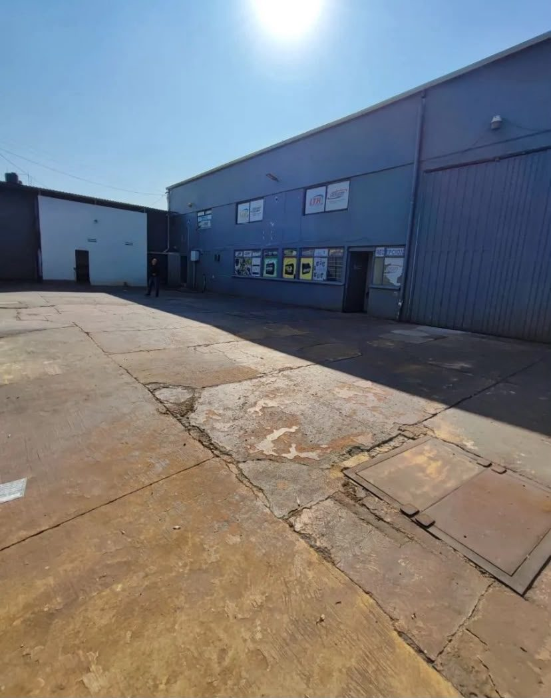
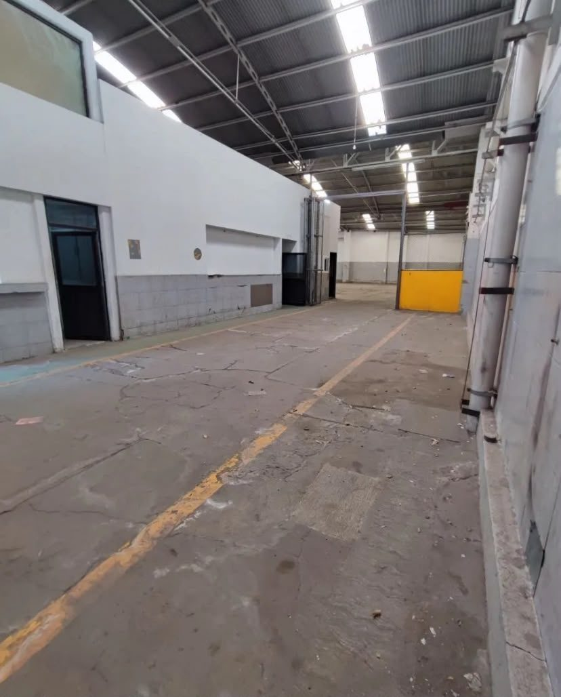

Bodega de 1,250 m² en venta
$32,000,000
Granjas México, Iztacalco, CDMXA 2 minutos de Calz. de la Viga
Documentación completa y en orden, lista para escriturarse.
- 300 m² de oficinas
- Entrada para tráiler
- Uso de suelo comercial e industrial
Grupo PremierVer sus 4 propiedades
Ubicación
- A 2 minutos de Calz. de la Viga
- A 10 minutos del aeropuerto
- A 15 minutos del Centro Histórico
Características
- Terreno de 25 m de frente por 50 m de fondo
- 300 m² de oficinas
- Entrada para tráiler
- Uso de suelo comercial e industrial